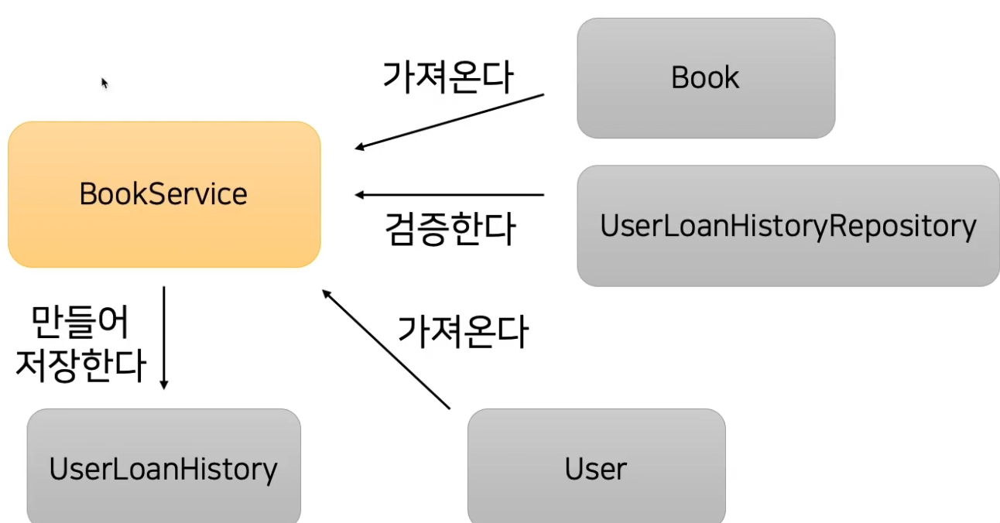
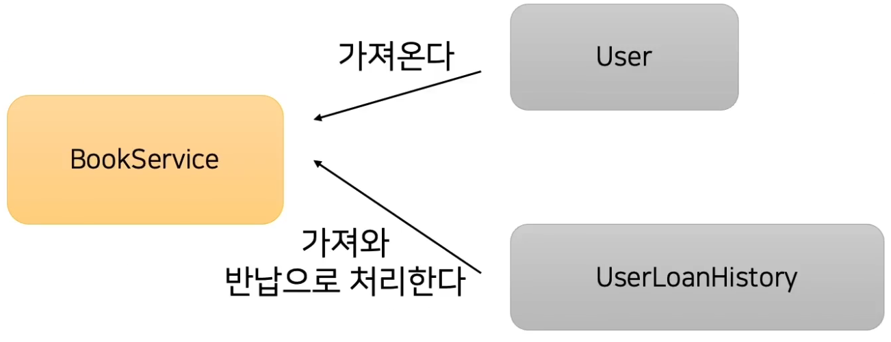
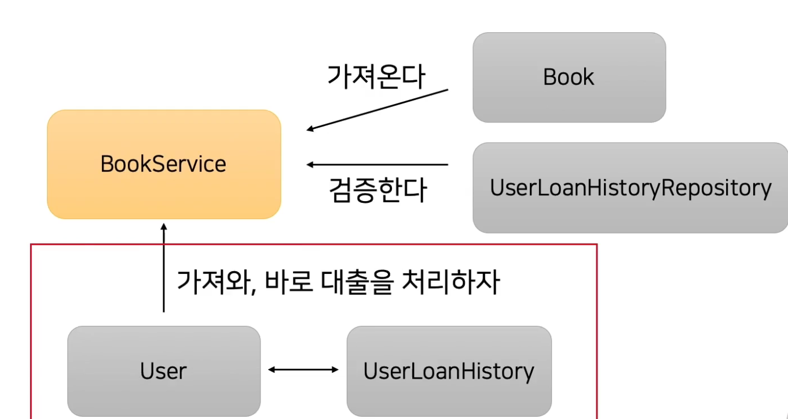
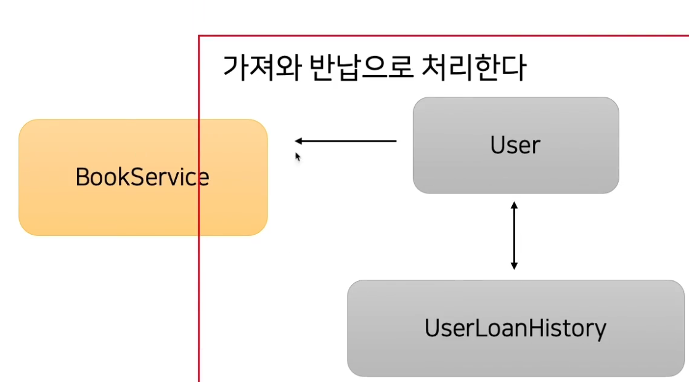
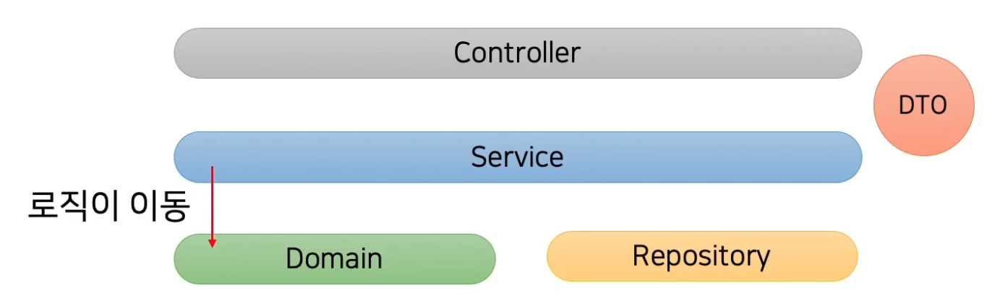

객체지향적으로 개발하기 03~

현재 전체적으로 코드를 보면 User 객체와 UserLoanHistory 객체가 직접 협업하는 방식이 아니라 BookService를 통해서 절차지향적으로 구성되어있습니다. 즉 BookService가 함수를 호출하여 필요한 기능만 동작하는 방식입니다.
반납 기능 관계

반납기능도 User객체와 UserLoanHistory객체끼리 관계를 맺는게 아니라 BookService객체가 각 객체의 메서드를 호출해서 동작하는 절차지향적인 방식으로 작성되었습니다.
객체지향적으로 코드를 작성하기 위해서 같은 도메인에 같은 관심사로 묶을 수 있는 User와 UserLoanHistory를 협업하게 합니다.

유저만 가져와서 바로 대출을 처리하게끔 코드를 작성합니다.

마찬가지로 북서비스가 유저만 가져오면 반납처리를 할 수 있도록 코드를 작성합니다.
선행 조건
User와 UserLoanHistory가 서로를 알아야 한다.
객체지향적인 코드를 작성하기 위해서 연관관계를 통해서 작성할 수 있습니다.
연관관계 사용시 장점은?

각자의 역할에 집중하게 됩니다.
서비스 계층의 역할은 꼭 필요한 경우에 서로 다른 도메인끼리 협업을 할 수 있도록 도와주고 트랜잭션을 관리하고 외부 의존성, 스프링 빈을 관리하는 역할 입니다.
도메인의 역할은 도메인 객체가 표현하고 있는 비즈니스, 관심사에 대해서 로직을 처리하는 게 도메인의 역할입니다.
그래서 각자 역할에 집중할 수 있는 코드를 작성할 수 있습니다.
개발자가 코드를 읽을 때 이해하기 쉽습니다.
서비스 계층에 모든 코드가 있을 때에는 절차 지향적인 함수 호출로 이루어진 코드이기 때문에 코드가 길어지면 이해하기가 어렵습니다.
하지만 도메인 코드로 어느정도 로직이 들어간다면 계층이 분리되어지고 새로운 개발자가 코드를 읽을 때 해당 도메인과 관련된 다른 도메인의 비즈니스 로직을 이해하기 쉽습니다.
연관관계가 무조건 좋은걸까?
연관관계를 많이 사용한 다는 것은 다른 객체끼리 상호작용이 많다는 의미가 됩니다.
그러면 같은 라이프 사이클이 아닌 다른 도메인도 연관관계를 맺게 된다면 원하지 않은 조회가 발생하거나 Lazy로딩으로 일해 불필요한 쿼리가 발생할 수 있습니다.
그리고 얽힌 연관관계로 오히려 도메인의 로직을 확인하기 어려울 수 있습니다.
A만 변경하려다가 연관된 B와 C도 같이 영향이 갈 수 있습니다.